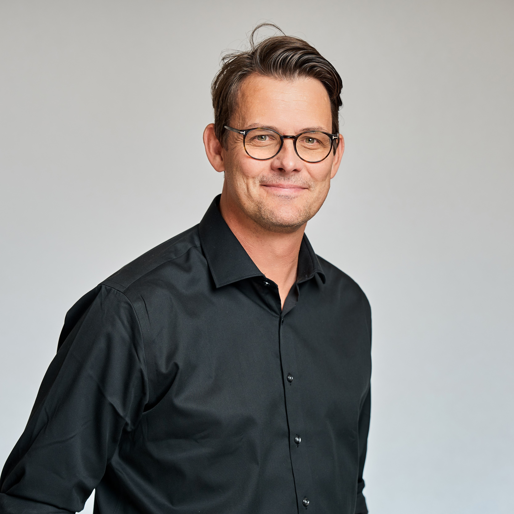
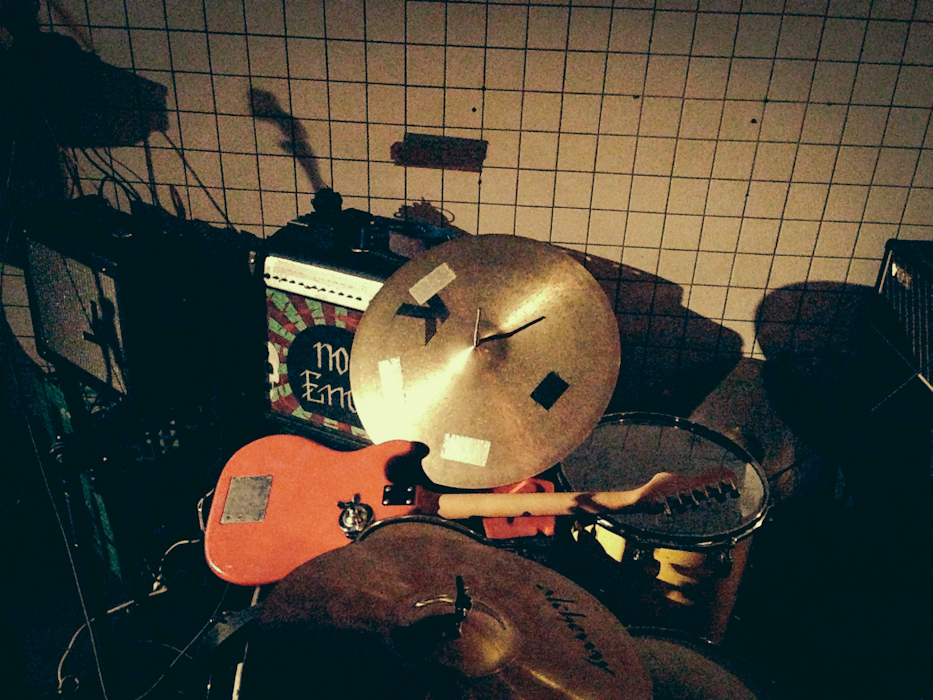
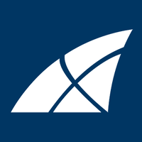
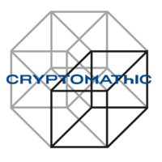
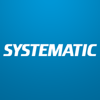
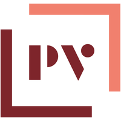
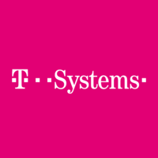

Kenneth Tiemroth
IT Director turning hybrid environments into secure, cloud-first operations
Azure • Microsoft 365 • Identity & Access • ISO/IEC 27001 • SOC 2 • SASE


IT Director with hands-on leadership across IT operations, cloud transformation, infrastructure modernisation, and information security.
Currently lead IT at Omada, with responsibility for the cloud and security stack underpinning ISO/IEC 27001 and SOC 2 Type II certification.
Deep Microsoft background: Azure, Microsoft 365, Active Directory, PKI, Hyper-V, and endpoint management.
• Led cloud-first transition on Microsoft Azure
• Three ISO/IEC 27001 recertifications and two SOC 2 Type II audits delivered
• Rolled out global SASE via Cato Networks
• Implemented Conditional Access, MFA, Intune baselines, and Omada Identity Cloud
• Restructured helpdesk to lift support efficiency
Cloud operations, platform stability, security hardening, compliance, and scalable IT foundations.
Comfortable in fast-changing environments where priorities shift and execution matters.
Based in Denmark. Open to hybrid and remote roles across Denmark and the Nordics.
Key areas of experience and leadership focus.
IT leadership, service improvement, operational ownership, stakeholder management, and helpdesk optimisation.
Microsoft Azure, Microsoft 365, Hyper-V, Windows Server, virtualisation, migrations, and infrastructure modernisation.
Identity and access management, Conditional Access, MFA, Intune, SASE, ISO/IEC 27001, SOC 2, and security hardening.
Azure AD / Entra ID, Active Directory, security groups, PKI, Omada Identity Cloud, and access governance.
Cato Networks, Meraki MX, secure VPN, network infrastructure, and global secure connectivity.
Structured, hands-on, and quality-focused. Comfortable in dynamic environments with shifting priorities.
Selected roles and responsibilities.

Omada | October 2016 - Present
IT Director (2021 - Present) · IT Manager (2018 - 2021) · IT Specialist (2016 - 2018)
Progressed from IT Specialist to IT Director, now leading IT operations, infrastructure, cloud, and security for a global SaaS vendor in Identity Governance.
• Led the transition from hybrid infrastructure to a cloud-first operating model on Microsoft Azure.
• Drove infrastructure modernisation, including Hyper-V platform improvements and scalability initiatives.
• Implemented key security and identity controls: Conditional Access, MFA, Intune Security Baselines, Azure AD / Entra ID, and Omada Identity Cloud.
• Owned IT controls across three ISO/IEC 27001 recertifications and two SOC 2 Type II audits.
• Restructured the internal helpdesk to improve support processes and operational efficiency.
• Rolled out a global SASE platform with Cato Networks to provide secure, optimised access for users across locations.
Tech Stack: Microsoft Azure, Hyper-V, Azure AD / Entra ID, Microsoft Intune, Conditional Access, MFA, Omada Identity Cloud, Cato Networks, Windows Server, PowerShell, SASE, ISO/IEC 27001, SOC 2 Type II

Cryptomathic | IT Operations / Infrastructure | January 2015 - September 2016
Managed IT operations and support for the Aarhus HQ and satellite offices in Cambridge, Munich, and San Jose.
• Led migration from on-premises Exchange to Microsoft 365.
• Oversaw implementation of new infrastructure, including Hyper-V hosts and SAN storage.
• Rebuilt the test environment on VMware.
• Rolled out a Meraki MX-based VPN solution to strengthen secure connectivity across offices.
Tech Stack: Microsoft 365, Hyper-V, VMware, SAN Storage, Meraki MX, Windows Server, Active Directory, DNS, DHCP

Systematic | Infrastructure Support Consultant | August 2013 - December 2014
Supported the IT infrastructure for the Admiral Danish Fleet in a high-security environment near Marselisborg, Aarhus.
• Supported two of the fleet's most mission-critical systems.
• Contributed to the full reconstruction of the IT infrastructure on HDMS Esbern Snare.
• Worked in an environment requiring active Danish security clearance.
Tech Stack: Windows Server, VMware, Cisco networking, Secure VPN, Backup and Recovery Systems, ITIL-based processes

Plougmann Vingtoft | IT Support / Infrastructure | December 2006 - July 2013
Supported day-to-day IT operations with responsibility across helpdesk, user administration, and infrastructure maintenance.
• Maintained and supported virtual infrastructure.
• Improved internal IT processes and business-facing documentation.
• Contributed to infrastructure planning and execution of roadmap initiatives.
Tech Stack: VMware, Microsoft Exchange, Windows Server, Helpdesk Systems, Active Directory, IT documentation tools

T-Systems / Jensen Consulting | Installation Consultant | January 1999 - November 2006
Consulting assignments delivered across multiple long-term client engagements.
Delivered consultancy services with a focus on support, operations, rollout, maintenance, and end-user enablement.
• Long-term assignments supporting IT operations, installation, training, and maintenance.
• Key clients included Maersk Logistics, DSB S-tog, Ferring Pharmaceuticals, and Nokia Danmark.
Core Areas: IT support, IT operations, deployment, training, maintenance
For opportunities, networking, or a conversation, feel free to get in touch.